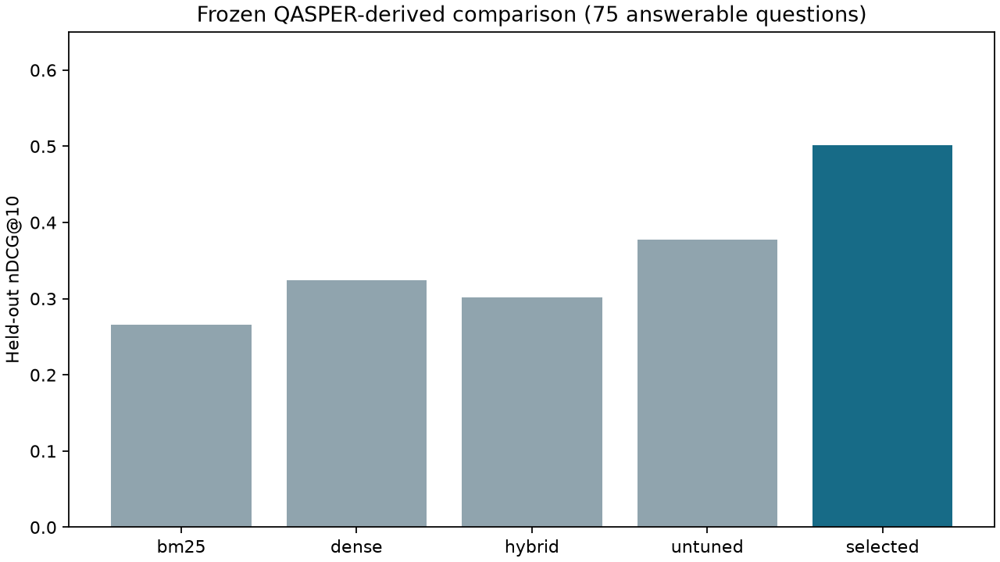

Recorded localhost API responses. This playback makes no live requests. The trained reranker improves held-out ranking; generated answers remain experimental.
0.0 sFinal evaluation · Five-minute walkthrough · Raw terminal recording

100 held-out questions, 75 answerable. Answer coverage 9%, token F1 .056, 45 explicit failures. Human semantic claim-support review remains unmeasured.